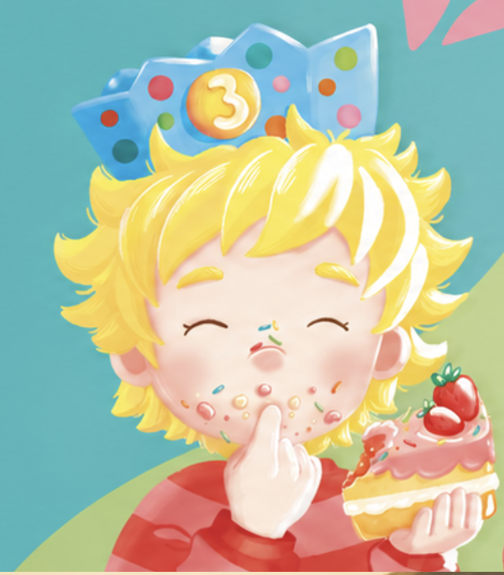
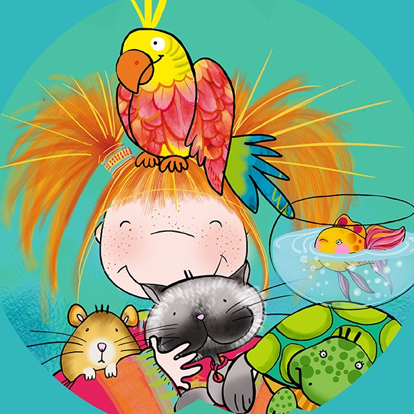
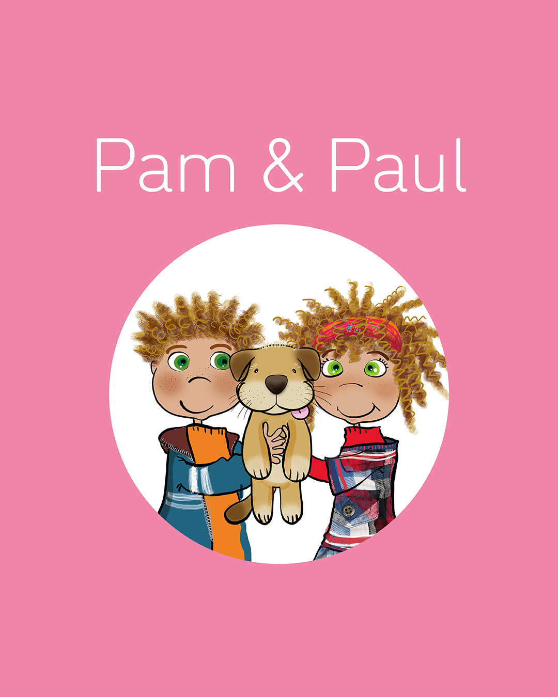

GUÍA DE ENTRADAS Y SALIDAS CURSOS KIDS | Sam, Emma, Oliver, Marcia, Pam&Paul, Ben&Brenda
Queridas familias,
Tenéis en vuestras manos la guía del funcionamiento de Kids&Us Nigrán. Aquí encontraréis todo lo importante sobre el día a día en nuestro centro. Leedla atentamente y no dudéis en consultarnos cualquier aspecto necesario.





Entrada del alumnado
- Acceso por la puerta del jardín.
- Formación de fila en el jardín; el profesorado recogerá a los alumnos y los guiará a clase en fila. Os rogamos no abandonar el jardín hasta que vuestro hijo o hija haya entrado al centro.
- Los niños no pueden quedarse solos en el jardín antes de que los recoja el profesor.
- No está permitido que los padres accedan al centro o al aula durante las clases ya que esto dificulta el desarrollo de la clase con normalidad y entorpece el proceso de adaptación del alumnado.
Durante el inicio de curso, es normal que algunos de los alumnos más pequeños sufran crisis de ansiedad por separación; os pedimos calma y confianza.
Nuestro profesorado está preparado y contamos con un protocolo de acción. Siempre podéis contar con el equipo de dirección del centro para manteneros informados sobre su proceso de adaptación. Un punto clave del protocolo es no alargar el momento de despedida en su llegada al centro. Contad con nuestro apoyo para ayudaros en todo momento.
- Punto de recogida: el jardín, con entrega individual y por nombre por parte del profesorado.
- En caso de llegada o recogida tarde, se accede por la puerta principal.
- La puntualidad en llegada y recogida es esencial.
Días de lluvia fuerte
- Llegada: entrada por el jardín. Seguir las indicaciones del equipo de dirección (fila bajo el toldo o posibilidad de hacer fila en el pasillo)
- Recogida: los padres pueden esperar bajo el toldo en el jardín. Los profesores entregan a los alumnos en la puerta del jardín, uno a uno y por nombre.
Normas de acceso
- Ser puntuales en la llegada y recogida.
- Traer el material necesario de clase y una botella de agua.
Salida del alumnado
- El alumnado saldrá por el acceso indicado (jardín), con entrega individual y por nombre por parte del profesorado.
- Entrega individual de alumnos por nombre, para garantizar la seguridad.
- Los alumnos solo podrán salir con madre, padre, tutor legal o persona autorizada por escrito.
- No se permite salir sin acompañante salvo autorización firmada por tutor legal (solicitar hoja de autorización de recogida)
- En caso de llegada o recogida tarde, se accede por la puerta principal.
- La puntualidad en llegada y recogida es esencial.
Horarios y comunicaciones
Para asegurarnos de que recibís nuestros avisos y comunicaciones importantes, os solicitamos que por favor realicéis estas dos acciones:
- 📇 Guardad en vuestra agenda el número de teléfono del centro.
- Uníos a nuestro canal oficial de WhatsApp: